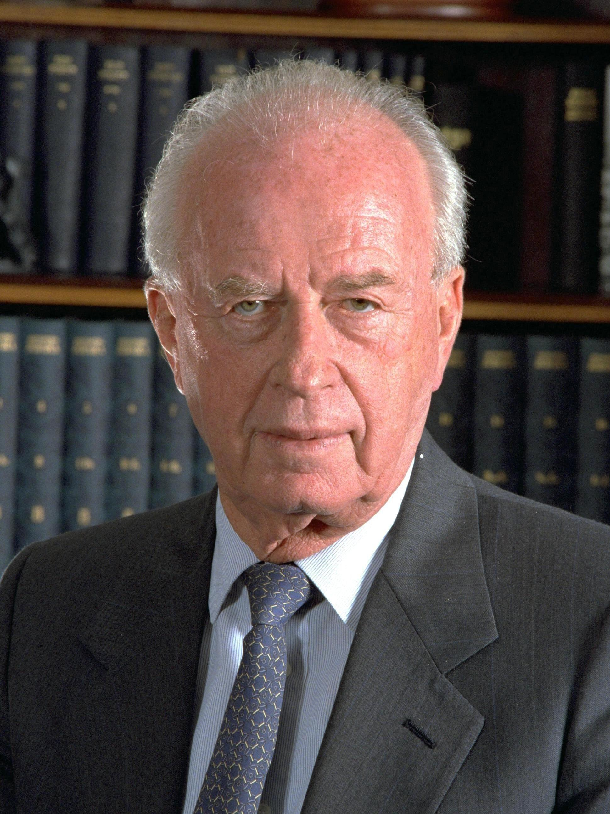

In an unprecedented move that stunned the world, Egyptian President Anwar Sadat traveled to Jerusalem in 1977, offering peace. This bold step shattered the Arab taboo of refusing to talk to Israel and paved the way for the historic Camp David Accords, fundamentally altering the Middle East peace process.
The Yom Kippur War of October 1973 was a military conflict that triggered a global economic and geopolitical revolution. Alarmed by the massive US arms airlift to Israel (Operation Nickel Grass), the Arab members of OPEC (Organization of the Petroleum Exporting Countries) enacted the "Oil Weapon." They placed a total oil embargo on the United States, Denmark, and the Netherlands, while cutting production for other Western nations by 25%. This move had a devastating, cascading impact on the global economy. The price of crude oil quadrupled in a matter of months, skyrocketing from $3 to $12 a barrel. Western industrial nations, highly dependent on cheap oil, plunged into a deep economic crisis characterized by soaring inflation (rising prices) and high unemployment. As oil prices rose, production costs increased, making goods more expensive; consequently, consumers bought fewer items, leading to factory bankruptcies and mass layoffs.
For the superpowers, the crisis changed the calculation of Middle Eastern diplomacy. The Yom Kippur War had brought the United States and the Soviet Union to the brink of a nuclear confrontation. The United States, badly hit by the embargo, now had a powerful financial incentive to broker a lasting peace between Israel and its Arab neighbors to ensure the stable flow of Middle Eastern oil. Furthermore, US policymakers wanted to use diplomatic negotiations to pull Egypt out of the Soviet sphere of influence. Because Egypt and Syria refused to meet face-to-face with Israeli officials, US Secretary of State Henry Kissinger stepped in as a mediator. Kissinger pioneered a form of negotiation known as "shuttle diplomacy," flying back and forth between Cairo, Damascus, and Tel Aviv for two months to relay messages, draft proposals, and bridge the deep psychological divide between the hostile states.
Kissinger’s efforts produced three highly important interim agreements. The Sinai I Agreement (January 1974) saw Israeli forces pull back from the west bank of the Suez Canal, creating a UN-patrolled buffer zone. The Golan Accord (May 1974) brokered a cease-fire line on the Golan Heights, with Israel withdrawing from Quneitra. The Sinai II Agreement (September 1975) saw Israel surrender the strategic Gidi and Mitla passes and the vital Abu Rudeis oil fields to Egypt. Crucially, the US established manned early-warning electronic monitoring stations in Sinai to guarantee compliance. A direct consequence of Kissinger's Sinai I agreement was the clearing of the Suez Canal. The canal had been blocked since the 1967 Six Day War by sunken ships and landmines. On 5 June 1975—exactly eight years to the day after its closure—President Anwar Sadat officially reopened the Suez Canal to international trade, providing a major boost to the Egyptian economy.
By 1977, the momentum of Kissinger’s shuttle diplomacy had stalled. In May 1977, the right-wing Likud bloc came to power in Israel, with Menachem Begin installed as Prime Minister. Begin firmly believed in Israel’s biblical claim to the entire Land of Israel, including the West Bank. Most observers assumed Begin's election would end all hopes of peace.
However, Anwar Sadat was facing severe internal pressures, a failing economy, and food riots in Cairo. Sadat realized only a dramatic, direct gesture could break the diplomatic deadlock. On 19 November 1977, Sadat’s presidential plane landed at Ben Gurion Airport in Israel. The following day, he addressed the Israeli Knesset, offering Israel complete recognition and permanent peace in exchange for complete Israeli withdrawal from all occupied Arab lands. By mid-1978, direct talks between Egypt and Israel had once again broken down over Begin’s refusal to dismantle Jewish settlements in the Sinai. To rescue the process, US President Jimmy Carter took a massive political risk, inviting both Sadat and Begin to the presidential retreat at Camp David, Maryland, for face-to-face negotiations.
For 13 days, Carter acted as a tireless mediator. The grueling summit resulted in the signing of the Camp David Accords on 17 September 1978. Framework 1 addressed the wider Palestinian issue, agreeing to a five-year transitional period of autonomy for the West Bank and Gaza Strip. Framework 2 outlined a bilateral peace treaty: Israel agreed to a phased, complete withdrawal from the Sinai Peninsula, and Egypt agreed to normalise relations. On 26 March 1979, Begin, Sadat, and Carter signed the formal Treaty of Peace between Egypt and Israel (the Treaty of Washington). Israel returned the entire Sinai Peninsula to Egypt, which became demilitarised. In return, Egypt officially recognized Israel’s right to exist, becoming the first Arab nation to do so. The Suez Canal and the Straits of Tiran were permanently open to Israeli maritime shipping.
While celebrated in the West, the peace treaty triggered a massive geopolitical backlash in the Middle East. The Arab League expelled Egypt for abandoning the Palestinian cause. Tragically, on 6 October 1981, Anwar Sadat was assassinated by radical Islamic militants within the Egyptian army who opposed his peace with Israel. Begin also faced furious opposition from hardline settlers, but the Knesset approved the treaty with a massive majority of 84 votes to 19.
Documentary / General Notes
Title / Topic: ______________________________________________________________
KT3.2: The Palestinian Issue, 1974–1993
Learning Objectives
Understand Arafat’s speech to the UN (1974) and the significance of PLO activities in Lebanon.
Analyze Israeli reprisals, the invasion of Lebanon (1982) and the results.
Evaluate the situation in the Israeli occupied territories and the First Palestinian Intifada (1987–93).
While Egypt and Israel made peace, the Palestinians felt abandoned. Operating out of Lebanon, the PLO launched relentless attacks against Israel, leading to the devastating 1982 Israeli invasion of Lebanon. By 1987, Palestinian frustration inside the occupied territories exploded into a spontaneous, grassroots uprising known as the First Intifada.
Did you know?
- Lebanon War (1982): Israel invaded Lebanon to destroy the PLO, resulting in thousands of civilian casualties.
- Intifada (1987): Meaning 'shaking off', this was a massive Palestinian uprising in the West Bank and Gaza involving strikes and stone-throwing.
- Hamas: Formed during the Intifada, this militant Islamic group emerged as a rival to the secular PLO.
Do Now Activity
Score: / 10
1. Who was the US Secretary of State who pioneered the stage-by-step mediation strategy known as 'shuttle diplomacy' following the 1973 Yom Kippur War?
2. In what month and year did Egypt officially reopen the Suez Canal to international shipping, exactly eight years to the day after its closure?
3. Explain how the 1973 Oil Crisis acted as a direct catalyst for the United States to become heavily involved in Middle Eastern diplomacy.
4. Which right-wing, revisionist Zionist leader won the May 1977 Israeli election, ending nearly thirty years of Labor Party dominance?
5. Explain how Anwar Sadat’s historic visit to Jerusalem in November 1977 broke a decades-long Arab diplomatic taboo.
6. Name the two distinct framework agreements that comprised the Camp David Accords signed on 17 September 1978.
7. Detail the primary bilateral terms of the Treaty of Washington signed on 26 March 1979.
8. How did the wider Arab world react to Egypt signing a separate peace treaty with Israel in 1979?
9. Explain the domestic backlash and political fallout that both Anwar Sadat and Menachem Begin faced within their own countries after signing the peace agreements.
10. Using a relative clause and an analytical linking phrase, write a single sentence showing how the 1973 Oil Crisis historically connected to the Treaty of Washington (1979).
Vocabulary Check
Style: Vocabulary Mapping
Write a historically accurate sentence connecting two terms from the glossary box below.
UN Resolution 3236 | Fatahland | Operation Peace for Galilee | Sabra and Shatila | First Intifada | Hezbollah
Your Sentence:
The First Intifada (1987)

Palestinian youth confronting Israeli troops during the First Intifada, a spontaneous grassroots uprising.
Israeli Response to the Intifada
Israeli Prime Minister Yitzhak Shamir, who implemented a harsh 'Iron Fist' policy in response to the Intifada.
PLO Exile in Lebanon

Yasser Arafat, leader of the PLO, whose organization was forced into exile in Tunisia following the 1982 Lebanon War.
Following the 1973 Yom Kippur War, the Palestine Liberation Organisation (PLO) sought to capitalize on the shifting geopolitical landscape to advance its diplomatic standing. On 13 November 1974, PLO Chairman Yasser Arafat made a historic address to the United Nations General Assembly in New York. This invitation was highly significant, representing the first time a representative of a non-state national movement was permitted to address the UN General Assembly plenary. Arafat, who delivered his speech wearing his signature checkered keffiyeh and olive-green uniform, famously concluded his remarks with a powerful metaphorical warning: "I have come bearing an olive branch and a freedom fighter's gun. Do not let the olive branch fall from my hand."

This dual-track message signaled that while the PLO was prepared to engage in international diplomacy to secure a sovereign Palestinian state, it would not abandon its armed struggle if diplomatic avenues were blocked. The diplomatic offensive yielded immediate results at the UN. Resolution 3236 formally recognized the inalienable rights of the Palestinian people to self-determination, and granted the PLO permanent Observer Status. At the Arab League Summit in Algiers, the PLO was officially recognized as the "sole legitimate representative of the Palestinian nation." Following its bloody expulsion from Jordan during the "Black September" civil war of 1970, the PLO relocated its central leadership, military apparatus, and thousands of fighters to Lebanon. Lebanon was an ideal haven: its central government in Beirut was weak, and the country already hosted over 400,000 Palestinian refugees living in camps.
Q1. What was the significance of UN Resolution 3236 (November 1974) for the PLO?

By the mid-1970s, the PLO had established a powerful "state-within-a-state" in southern Lebanon, widely known as "Fatahland". The PLO operated its own checkpoints, collected taxes, ran hospitals, and established military training camps. From these bases, PLO guerrilla fighters launched cross-border raids and fired Katyusha rocket barrages into northern Israel, terrorizing the civilian settlements of the Galilee region. On 11 March 1978, a Fatah commando unit launched the Coastal Road Massacre, hijacking a civilian bus and engaging in a gun battle that resulted in the deaths of 37 Israeli civilians. In direct retaliation, Prime Minister Menachem Begin ordered the IDF to launch Operation Litani on 15 March 1978.
Q2. What was 'Fatahland' and how did it threaten Israeli security?

Over 26,000 IDF troops invaded southern Lebanon, occupying a 10-kilometer-wide security strip. The UN established the United Nations Interim Force in Lebanon (UNIFIL) to confirm the Israeli withdrawal. Israel withdrew but left control of the buffer zone to a friendly, pro-Israeli Christian militia known as the South Lebanon Army (SLA). The UNIFIL buffer failed to stop the conflict. The final trigger for full-scale war occurred on 3 June 1982, when the Abu Nidal Organization shot and critically wounded Shlomo Argov, Israel’s ambassador to Great Britain. Although British intelligence confirmed the PLO was not responsible, Israeli Defense Minister Ariel Sharon used the assassination attempt as the necessary pretext to launch a long-planned, total invasion of Lebanon: Operation Peace for Galilee.
Q3. What pretext did Israeli Defense Minister Ariel Sharon use to launch Operation Peace for Galilee in June 1982?

On 6 June 1982, Israeli forces launched a massive armored invasion. Ariel Sharon secretly harbored much larger geopolitical ambitions: to completely destroy the PLO in Lebanon, defeat Syrian forces, and install a pro-Israeli Christian government in Beirut led by Maronite leader Bashir Gemayel. By mid-June, Israeli forces surrounded Lebanon's capital, trapping Yasser Arafat and 15,000 PLO fighters in West Beirut. For over two months, Israel subjected the city to relentless bombardments. To prevent total destruction, a multinational peacekeeping force supervised the evacuation of Yasser Arafat and over 14,000 fighters by ship to Tunis, Tunisia.
Q4. What were Ariel Sharon’s larger geopolitical ambitions behind the 1982 invasion of Lebanon?
Having successfully expelled the PLO, Israel's close Maronite ally, Bashir Gemayel, was elected President of Lebanon. However, on 14 September 1982, Gemayel was assassinated in a massive bomb blast by Syrian agents.

In response to the assassination, the IDF occupied West Beirut. On 16 September 1982, Israeli forces surrounded the Palestinian refugee camps of Sabra and Shatila. Claiming PLO terrorists remained inside, Ariel Sharon authorized the Lebanese Christian Phalangist militias to enter the camps to clear them. Fueled by anger over the death of Gemayel, the Phalangists systematically slaughtered unarmed civilians. While the IDF held the perimeter and illuminated the night skies with flares, the militias murdered between 800 and 3,500 people. The revelation of the atrocities triggered immediate, furious international condemnation. The extraparliamentary peace movement "Peace Now" organized a protest of 400,000 Israelis in Tel Aviv. The Kahan Commission concluded that Defense Minister Ariel Sharon bore "personal, indirect responsibility" for the tragedy. He was forced to resign.
Q5. Describe the events and consequences of the Sabra and Shatila massacre in September 1982.

While the PLO leadership remained isolated in Tunis, the core of the Palestinian struggle shifted back to the occupied territories. On 8 December 1987, an Israeli military truck collided with a civilian car, killing four Palestinians. The local population erupted in massive demonstrations that swept across Gaza and the West Bank, marking the start of the First Palestinian Intifada ("The Shaking Off").
Q6. What event marked the start of the First Palestinian Intifada in December 1987?

Unlike the PLO operations, the First Intifada was a grassroots, popular civilian uprising utilizing non-violent civil disobedience (strikes, boycotts) alongside low-level street violence. The iconic visual of the Intifada consisted of Palestinian youth throwing stones at heavily armored Israeli tanks. Israeli Defense Minister Yitzhak Rabin responded with a severe "Iron Fist" policy, ordering the IDF to "break the bones" of demonstrators. However, television cameras broadcasted graphic footage of heavily armed soldiers beating stone-throwing children across the globe. For the first time, global public sympathy shifted decisively toward the Palestinian cause, severely damaging Israel’s international moral standing.
Q7. How did the First Intifada shift global public sympathy toward the Palestinian cause?
CONSEQUENCES OF THE FIRST INTIFADA
| For the PLO |
For Israel |
The Rise of Hamas |
| Forced Yasser Arafat to renounce terrorism and officially accept the two-state solution (1988) to retain leadership. |
Convinced Yitzhak Rabin and military planners that there was no purely military solution to the Palestinian issue. |
Formed in 1987 as a rival to the PLO, Hamas rejected compromises and conducted violent armed attacks against Israelis. |
Writing Historically: Level 9 Stylistic Masterclass
GCSE history examiners actively look for clear, sophisticated written expression that demonstrates analytical links between historical causes, events, and consequences.
- 1. Using Relative Clauses to Pack in Evidence (AO1): Add vital historical information directly to a noun using relative pronouns like 'who', 'which', or 'whose'. For example: Yasser Arafat, who addressed the UN General Assembly in 1974 wearing his signature keffiyeh and military uniform, successfully secured international legitimacy...
- 2. Using Noun Phrases in Apposition (AO1): Place two noun phrases side-by-side to provide concise historical detail. For example: Ariel Sharon, the hardline Israeli Defense Minister, launched Operation Peace for Galilee in June 1982.
- 3. Using Present Participles (AO2): Link cause and effect using verbs ending in '-ing'. For example: ...Palestinian guerrillas launched frequent cross-border attacks, provoking disproportionate Israeli military reprisals.
Q8. Write a narrative account analysing the key developments of the PLO in Lebanon in the years 1970–82. (8 marks)
Pair & Share Activity
Prompt: Why was the First Intifada more damaging to Israel's international reputation than their previous wars with Arab armies?
GCSE Exam Practice
GCSE Exam Practice
Write a narrative account analysing the key events of the First Intifada (1987–1993). (8 marks)
Planning your narrative account:
Remember to link your paragraphs chronologically. You could use these sentence starters:
- The first key event was...
- This directly led to...
- Consequently, this triggered...
- This situation culminated in...
Exam Practice
1. Explain the importance of Yasser Arafat's speech to the UN, 1974, for the international recognition of the Palestinian cause. (8 marks)
2. Explain the importance of PLO activity in Lebanon for Israel. (8 marks)
4. Explain one consequence of the 1982 Israeli invasion of Lebanon. (4 marks)
6. Explain one consequence of the Palestinian Intifada (1987–93). (4 marks)
3. Write a narrative account analysing the key events of Israel's escalating conflict with the PLO in Lebanon 1978-1982. (8 marks)
5. Explain the importance of the First Intifada (1987-93) for the Palestinians and Israel. (8 marks)
Documentary / General Notes
Title / Topic: ______________________________________________________________
KT3.3: Attempts at a solution, 1988–1995
Learning Objectives
Understand the significance of Arafat’s renunciation of terrorism in a speech at the UN (1988).
Analyze changing superpower policies in the Middle East: US involvement in the Gulf War (1991), and the end of the Cold War.
Evaluate Arafat, Rabin and the Oslo Accords (1993); the setting up of the Palestinian National Authority; the Israel-Jordan peace treaty (1994); and Oslo II (1995).
The sheer exhaustion of the Intifada forced both sides to the negotiating table in secret. In 1993, the world watched in awe as PLO Chairman Yasser Arafat and Israeli Prime Minister Yitzhak Rabin shook hands on the White House lawn, signing the Oslo Accords. It seemed peace was finally possible, but extremists on both sides were determined to destroy it.
Did you know?
- Oslo Accords (1993): Created the Palestinian Authority with limited self-rule in parts of the West Bank and Gaza.
- Mutual Recognition: The PLO finally recognised Israel's right to exist, and Israel recognised the PLO as the representative of the Palestinians.
- Assassination of Rabin (1995): A right-wing Israeli extremist assassinated Yitzhak Rabin, severely derailing the peace process.
Do Now Activity
Score: / 10
1. What was the famous metaphor Yasser Arafat used in his historic 1974 address to the United Nations General Assembly?
2. What major diplomatic status did the UN General Assembly award the PLO under Resolution 3236 following Arafat's speech?
3. Why did the PLO choose to relocate its central headquarters and fighters to Lebanon after being expelled from Jordan in 1970–71?
4. What was 'Fatahland,' and how did its existence affect northern Israeli security?
5. Explain the short-term trigger that Ariel Sharon used as a pretext to launch the June 1982 invasion of Lebanon.
6. Following the Siege of Beirut in August 1982, where were Yasser Arafat and the PLO leadership evacuated to under international supervision?
7. Why did the Israeli Kahan Commission (1983) find Defense Minister Ariel Sharon 'indirectly responsible' for the Sabra and Shatila massacre?
8. What spontaneous event in December 1987 served as the immediate catalyst for the outbreak of the First Palestinian Intifada?
9. Describe the civilian tactics of the First Intifada and explain why Yitzhak Rabin's military response backfired internationally.
10. Write an analytical sentence linking the First Palestinian Intifada to the emergence of Hamas.
Vocabulary Check
Style: Mini-Frayer Model
Complete the Frayer Model for the term: UNLU
| Definition |
Historical Example |
| Non-Example / Sketch |
Your own sentence |
The Oslo Handshake (1993)

Yitzhak Rabin, Yasser Arafat, and Bill Clinton sealing the Oslo I Accord on the White House lawn.
Israel-Jordan Peace Treaty (1994)

King Hussein of Jordan, who signed the historic peace treaty with Israel in 1994, normalizing relations between the two countries.
Assassination of Yitzhak Rabin

The book cover of 'Yitzhak Rabin: Soldier, Leader, Statesman' depicting Rabin, who was assassinated by an Israeli extremist at a Tel Aviv peace rally.
By late 1988, PLO Chairman Yasser Arafat realized that the political landscape was shifting beneath his feet. The First Palestinian Intifada had been launched and coordinated by grassroots local committees on the ground, bypassing the traditional PLO leadership isolated in Tunis. Arafat faced a major dilemma: his leadership was being rapidly overshadowed by new, highly popular underground leaders in the Unified National Leadership of the Uprising (UNLU) and radical Islamist groups like Hamas and Islamic Jihad.

To regain political control, Arafat enacted a historic shift in PLO strategy. In November 1988, the Palestinian National Council officially accepted the principles of partition and a two-state solution—officially recognizing Israel’s right to exist alongside a sovereign, independent Palestinian state in the occupied territories. In December 1988, on the strict insistence of the United States, Arafat delivered a historic speech to a special session of the UN General Assembly in Geneva. In this speech, Arafat explicitly renounced and condemned all forms of terrorism. This met the long-standing US conditions for official diplomatic contact, forcing the Reagan administration to open formal diplomatic talks with the PLO.
Q1. How did Yasser Arafat enact a historic shift in PLO strategy in late 1988?
The international geopolitical order was completely transformed between 1989 and 1991. The dissolution of the Soviet Union (USSR) in December 1991 brought an end to the Cold War and fundamentally altered the balance of power in the Middle East.

The collapse of the USSR was a devastating blow to the PLO, which lost its primary funding and diplomatic backing. Over 200,000 Soviet Jews migrated to Israel, leading to the expansion of Jewish settlements in the West Bank and displacing Palestinian workers. Arafat realized he had to secure a deal immediately. The end of the Cold War also meant the US emerged as the sole global superpower and used its leverage, threatening to withhold a $10 billion loan guarantee, to force Israel's Prime Minister Yitzhak Shamir to negotiate. In August 1990, Iraqi dictator Saddam Hussein invaded Kuwait, triggering the 1991 Gulf War. Arafat made the disastrous decision to publicly support Saddam Hussein.
Q2. How did the collapse of the Soviet Union in 1991 severely damage the PLO's geopolitical position?

Outraged by Arafat's betrayal, wealthy Gulf Arab states cut off all financial donations. Kuwait expelled over 300,000 Palestinian workers. The PLO was left bankrupt. To stabilize the region, the US and USSR co-sponsored the Madrid Peace Conference in November 1991. While the public talks stalemated, they broke the taboo of direct negotiations. In June 1992, the moderate Labor Party came to power in Israel under Yitzhak Rabin. Rabin authorized secret, back-channel negotiations in Oslo, Norway.
Q3. Why was the PLO left bankrupt and diplomatically isolated following the 1991 Gulf War?

The urgency intensified in April 1993 when Hamas launched its first suicide car bombing. This convinced Rabin that Arafat’s PLO was a moderate alternative. The secret negotiations produced the historic Oslo I Accords, signed on the White House lawn on 13 September 1993. Arafat renounced terrorism and recognized Israel, while Rabin recognized the PLO. An interim Palestinian National Authority (PNA) was established to govern Gaza and Jericho. In October 1994, Israel and Jordan signed a formal Treaty of Peace. King Hussein approached Rabin because Jordan was suffering economically after the Gulf War. US President Bill Clinton promised to cancel Jordan's massive debts if it normalized relations.
Q4. What convinced Israeli Prime Minister Yitzhak Rabin to engage in secret negotiations with the PLO in 1993?

On 28 September 1995, Rabin and Arafat signed the Oslo II Accords, which detailed the expansion of Palestinian self-rule across the West Bank by dividing it into three zones.

While Oslo II was celebrated, the division triggered a massive political backlash. Palestinians were frustrated that the PNA only controlled a fragmented archipelago (Area A), while Israel still controlled 70% of their land (Area C). Hamas launched suicide bus bombings. Right-wing Israelis were outraged by Rabin's concessions.
Q5. Why did the Oslo II Accords trigger a massive political backlash among Palestinians?

On 4 November 1995, Yitzhak Rabin was assassinated at a peace rally in Tel Aviv by Yigal Amir, a radical right-wing Jewish law student. The assassination dealt a fatal blow to the peace process, leaving the "permanent status" issues completely unresolved.
Q6. What event dealt a fatal blow to the peace process on 4 November 1995?
Q7. Write a narrative account analysing the key developments in the peace process between Israel and the Palestinians in the years 1988–95. (8 marks)
The tragic assassination of Rabin highlighted the deep structural flaws of the Oslo Accords. While celebrated internationally as a breakthrough, the agreement was fundamentally ambiguous. It intentionally delayed the most difficult "permanent status" issues—such as the final borders, the status of Jerusalem, the right of return for Palestinian refugees, and the dismantling of Israeli settlements—to a later date. This delay created a dangerous vacuum of uncertainty. Right-wing Israelis viewed any land concessions as a threat to national security and biblical claims, while Palestinian hardliners argued that the PNA had essentially become a subcontractor for Israeli security, failing to deliver true sovereignty or halt settlement expansion. Ultimately, the Accords required a high level of mutual trust that simply did not exist on the ground.
Q8. Explain why the Oslo Accords were considered 'fundamentally ambiguous' and structurally flawed. (12 marks)
Pair & Share Activity
Prompt: Looking at the assassination of Rabin, why are peace agreements sometimes more dangerous for leaders than declaring war?
GCSE Exam Practice
GCSE Exam Practice
Explain the importance of the Oslo I Accord (1993) for the Middle East peace process. (8 marks)
Exam Practice
1. Explain the importance of Yasser Arafat's renunciation of terrorism in 1988 for the peace process. (8 marks)
2. Explain the importance of the first Gulf War and end of the Cold War (1991) for the conflict in the Middle east. (8 marks)
3. Explain one consequence of the Gulf War (1991) for the Arab-Israeli conflict. (4 marks)
4. Explain one consequence of US involvement in the Gulf War, 1991, for the PLO. (4 marks)
7. Explain one consequence of the 1993 Oslo Peace Accords. (4 marks)
10. Explain one consequence of the setting up of the Palestinian National Authority. (4 marks)
12. Explain one consequence of Oslo II, 1995. (4 marks)
5. Explain the importance of US involvement in the Gulf War, 1991, for the diplomatic strategy of the PLO. (8 marks)
6. Write a narrative account analysing the key events of the peace process between Israel and the Palestinians, 1991-1995. (8 marks)
8. Explain the importance of the Oslo Accords for the conflict in the Middle East. (8 marks)
9. Explain the importance of Oslo II, 1995, for the Middle East peace process. (8 marks)
11. Write a narrative account analysing attempts at a solution in the years 1988–95. (8 marks)
Documentary / General Notes
Title / Topic: ______________________________________________________________
Appendix: Further Watching
Scan the QR codes below to watch historical documentaries and videos related to each lesson. Use these for independent revision or homework.
KT3.1: Diplomatic negotiations, 1974–1979

When Anwar Sadat visited Israel | Turning Point
1 mins 45 secs

Here's How the Camp David Accords Impacted the Middle East | History
4 mins 9 secs

WE REMEMBER - Israel and Egypt Peace treaty
1 mins 29 secs

The Egypt-Israel peace treaty
1 mins 41 secs

Anwar Sadat Visits Israel (This Week in Jewish History) Dr. Henry Abramson
6 mins 4 secs
KT3.2: The Palestinian Issue, 1974–1993

The Munich Massacre | History of Israel Explained | Unpacked
11 mins 8 secs

S1e8 Black September Hijackings Days That Shook The World
45 mins 0 secs

Black September: When Palestine Almost Stole Jordan | Full Documentary
13 mins 51 secs

SEPTEMBER 5 | Official Trailer (2024 Movie)
2 mins 23 secs
The Munich Massacre | History of Israel Explained | Unpacked
11 mins 8 secs
Black September: When Palestine Almost Stole Jordan | Full Documentary
13 mins 51 secs

Micro History: The First Lebanon War (1982)
2 mins 37 secs

What Were The Palestinian Intifadas? | NowThis World
5 mins 12 secs

Micro History: First Intifada (1987-1993)
1 mins 59 secs

NAILA AND THE UPRISING : The First Intifada Begins
2 mins 24 secs

Palestine Remix - How the Gulf War Weakened the PLO
1 mins 48 secs

The Gulf War in Israel, Explained
4 mins 30 secs

Yasser Arafat Speech Young at the United Nations in 1974 [English subtitles]
10 mins 3 secs

Historical Video
Duration not found

Historical Video
Duration not found

Israeli settlements, explained | Settlements Part I
8 mins 5 secs

Palestinian ambassador Husam Zomlot wants ‘clear commitment from UK to fix the mess created here'
10 mins 24 secs
KT3.3: Attempts at a solution, 1988–1995

The Price of Oslo (Episode 1) | Al Jazeera World Documentary
47 mins 15 secs

The Price of Oslo (Episode 2) | Al Jazeera World Documentary
47 mins 30 secs

The Oslo Accords | History Lessons
6 mins 37 secs

Have Israelis & Palestinians Ever Made Peace? | The Oslo Accords Explained
13 mins 10 secs

How and why Oslo Accords failed
4 mins 42 secs

How Israel automated occupation in Hebron | The Listening Post
25 mins 20 secs

Why Did Israel Refrain from Retaliating against Iraq in 1991?
2 mins 19 secs

Historical Video
Duration not found
Generated: 2026-08-08 00:03:09 UTC | Unit: cme_new